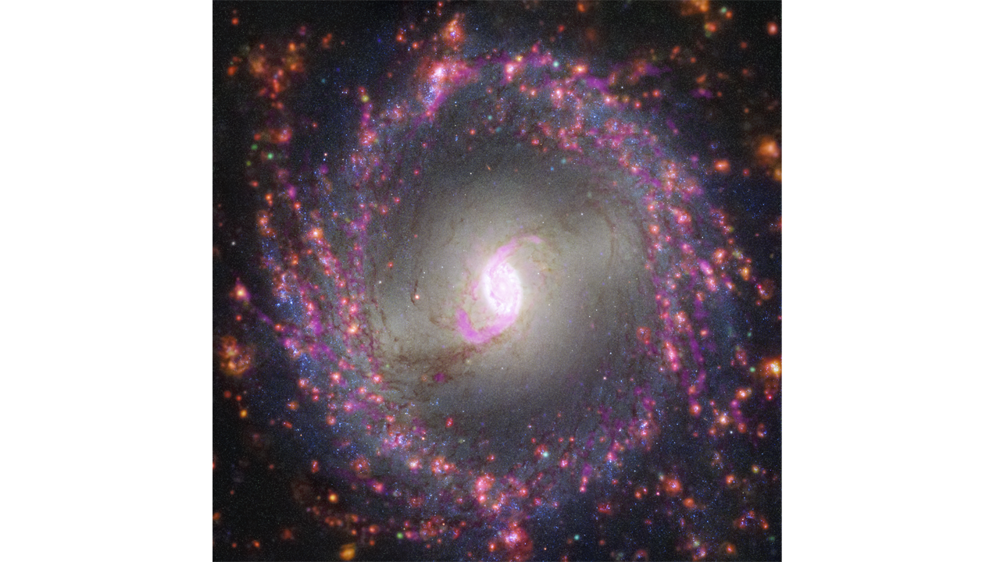
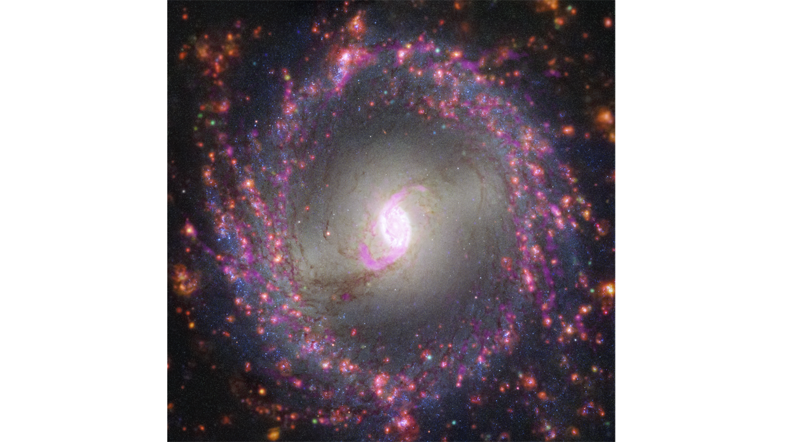
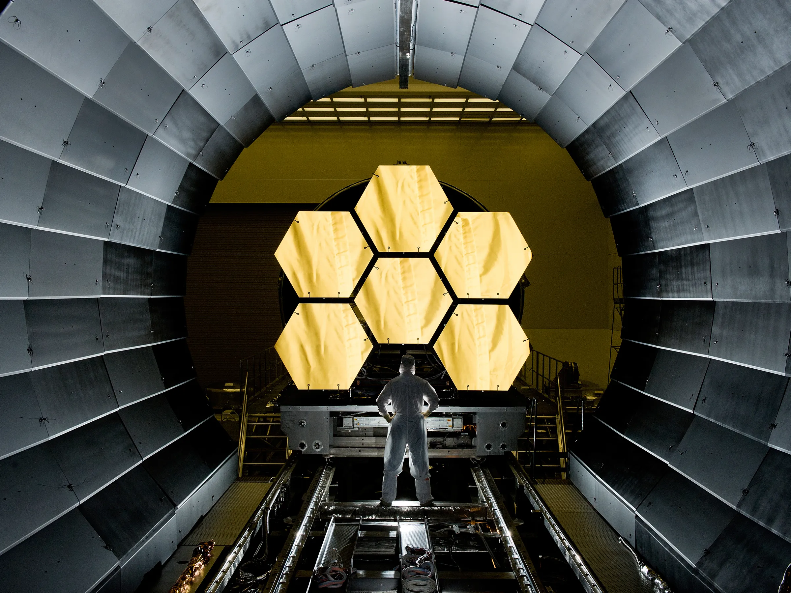
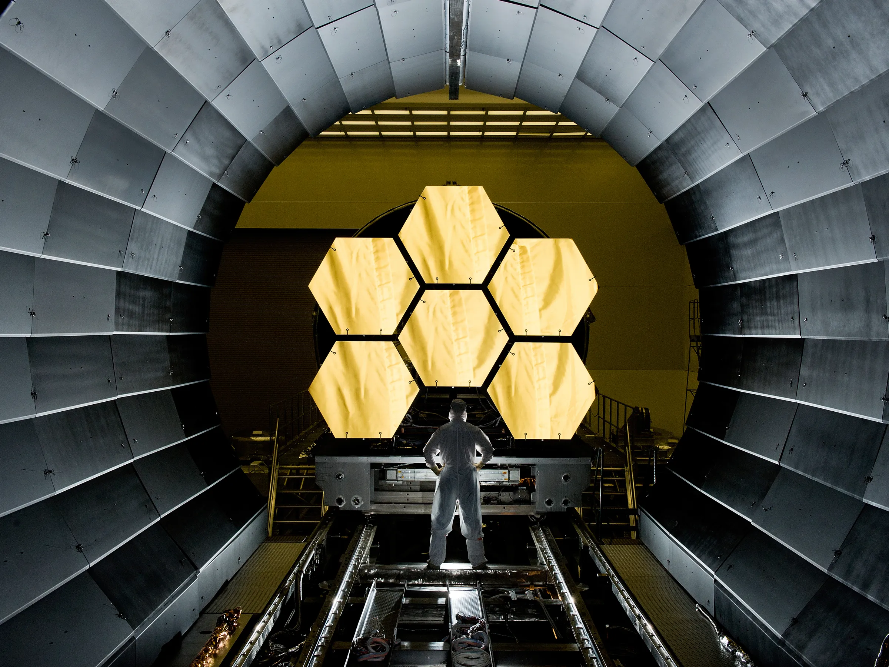

James Webb Telescope Images
Hi, my name is Ricky. I am enthusiast of space, human history and place in the universe and all the things we can observe with magnificent tools like telescopes. Since I was a little boy I was fascinated by view of sparkling stars on a night sky. This sometimes overwhelming feeling pushed me into space engineering and as a hobby I am inspecting the sky with my Takahashi FS-102 Flourite telescope.
L1527 and Protostar

The protostar within the dark cloud L1527, shown in this image from NASA’s James Webb Space Telescope Near-Infrared Camera (NIRCam), is embedded within a cloud of material feeding its growth. Read More
Pillars of Creation (Hubble and Webb Images Side by Side)

NASA's Hubble Space Telescope made the Pillars of Creation famous with its first image in 1995, but revisited the scene in 2014 to reveal a sharper, wider view in visible light, shown above at left. Read More
Multiwavelength View of NGC 1300

This image of spiral galaxy NGC 1300 combines multiple observations to map stellar populations and gas. Radio light observed by the Atacama Large Millimeter/submillimeter Array (ALMA), represented in yellow, highlights the clouds of cold molecular gas that provide the raw material from which stars form. Read More
Most Popular
Cartwheel Galaxy

This image of the Cartwheel and its companion galaxies is a composite from Webb’s Near-Infrared Camera (NIRCam) and Mid-Infrared Instrument (MIRI), which reveals details that are difficult to see in the individual images aloneRead More
Neptune Close Up (NIRCam)
.png)
Webb’s Near-Infrared Camera (NIRCam) image of Neptune, taken on July 12, 2022, brings the planet’s rings into full focus for the first time in more than three decades.Read More
Gallery
 

 
